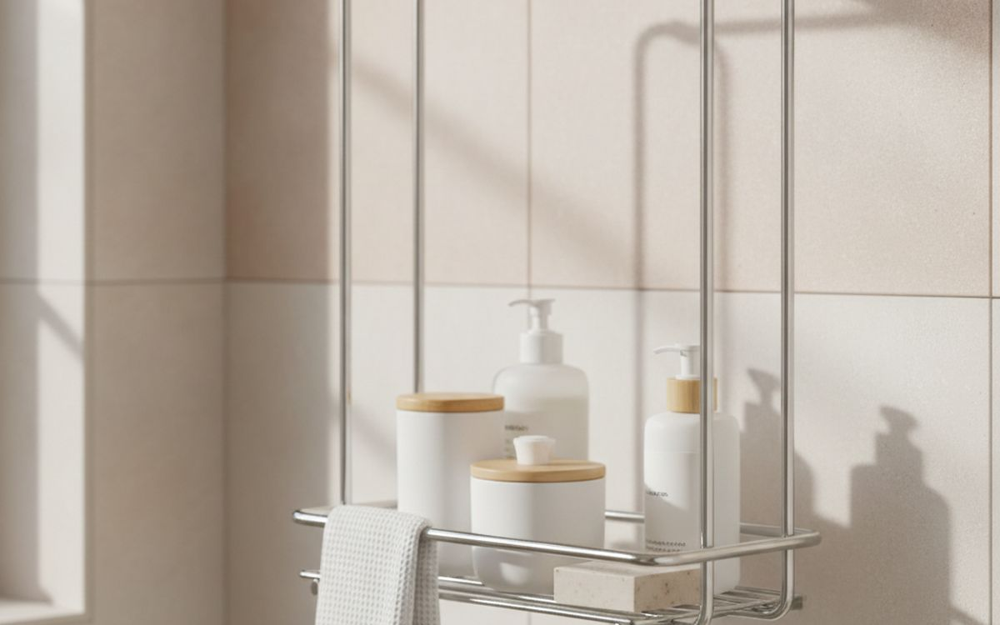
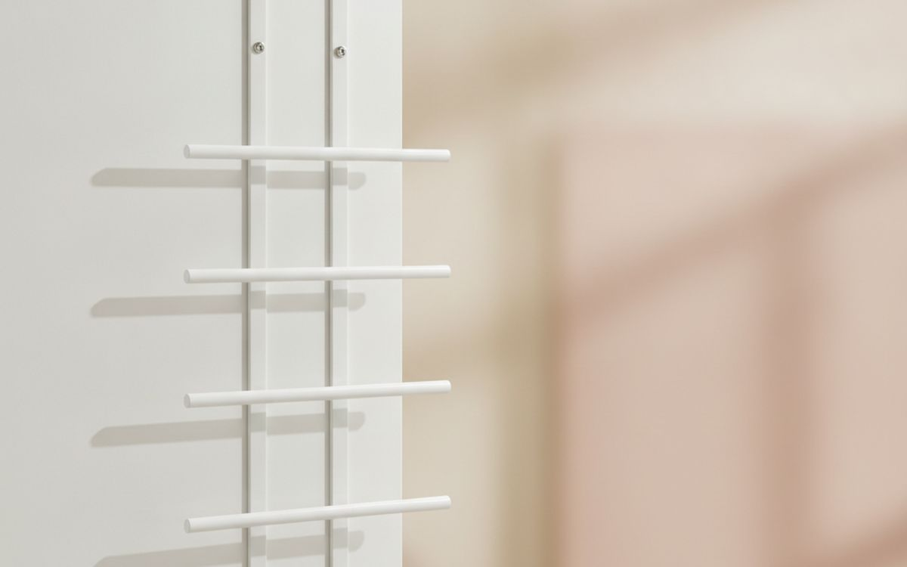
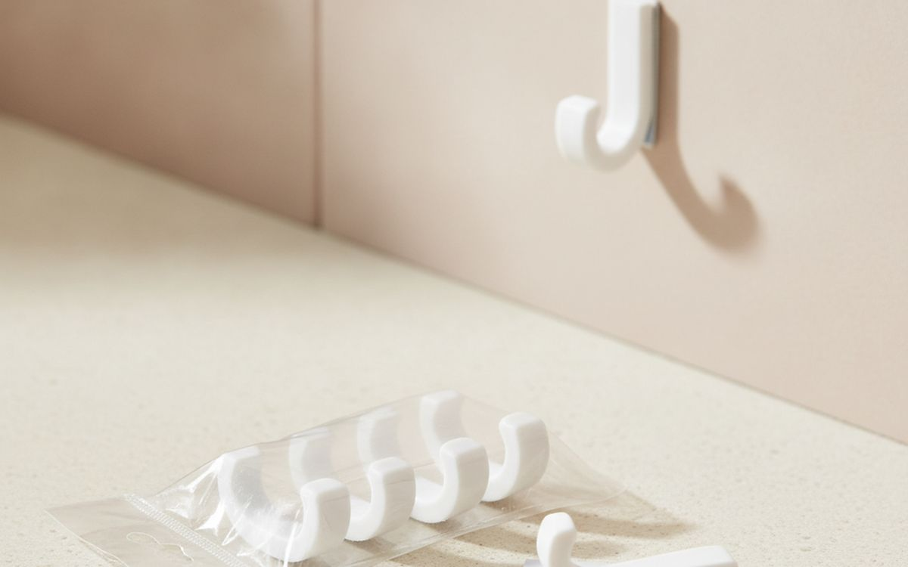
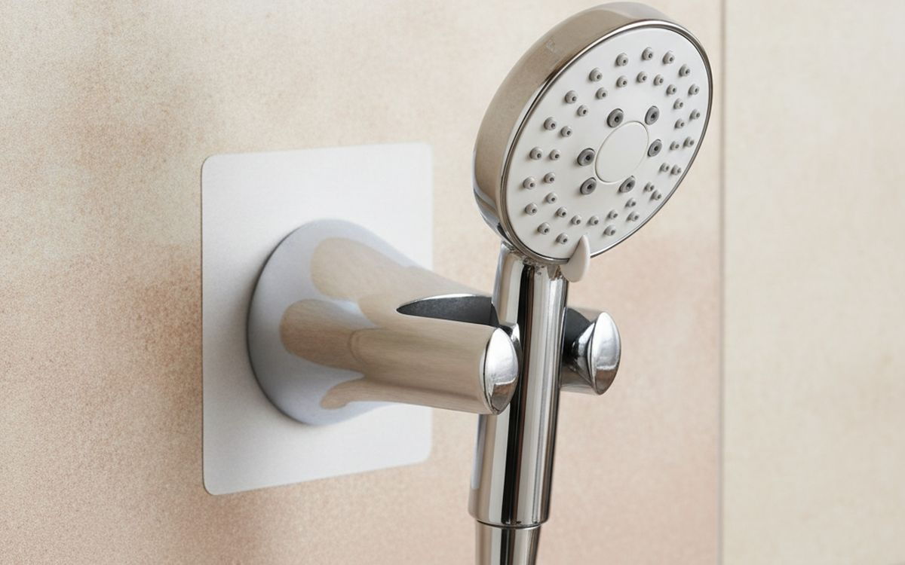
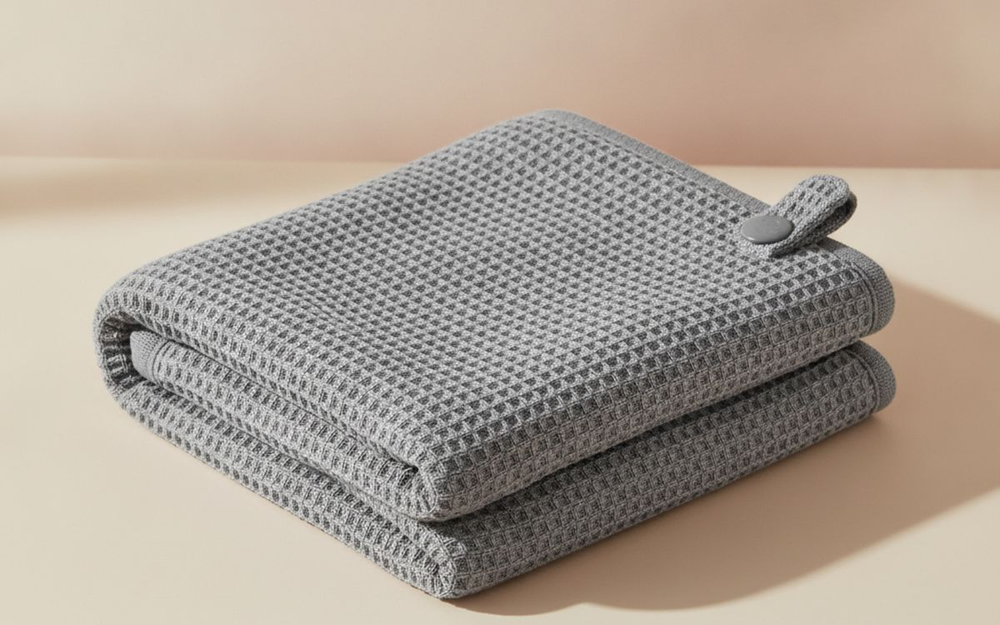
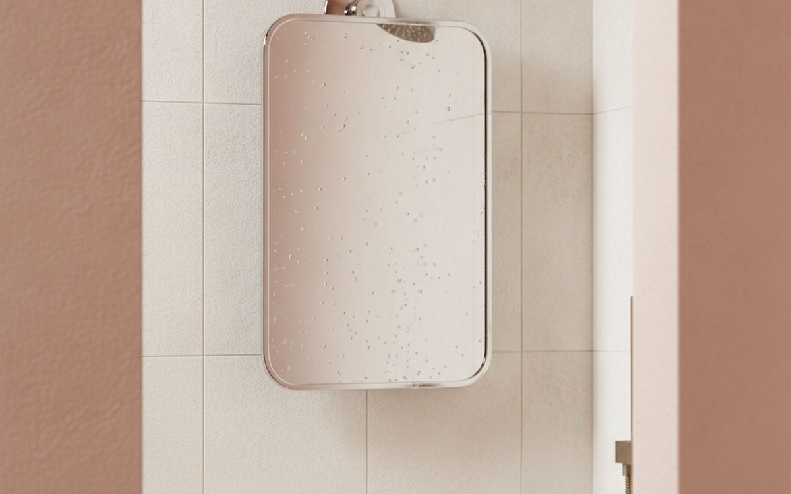
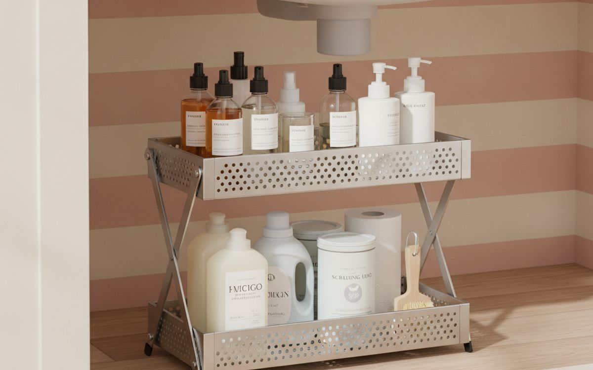
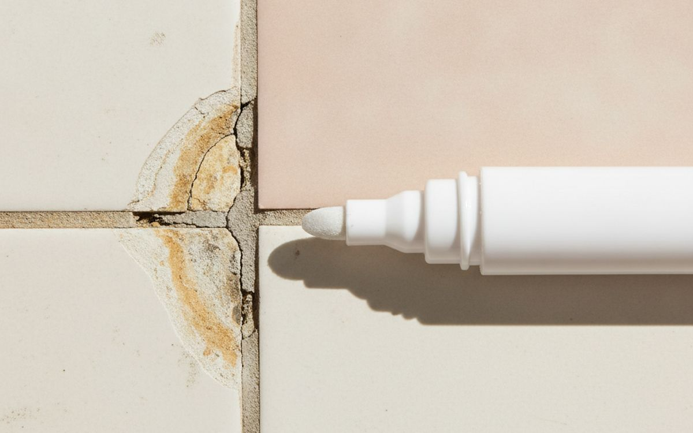
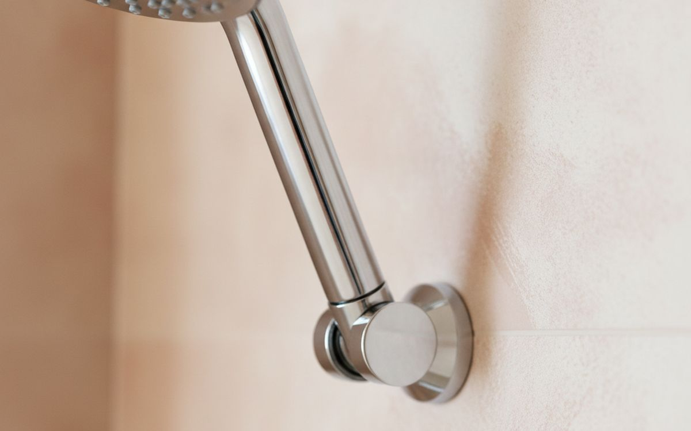
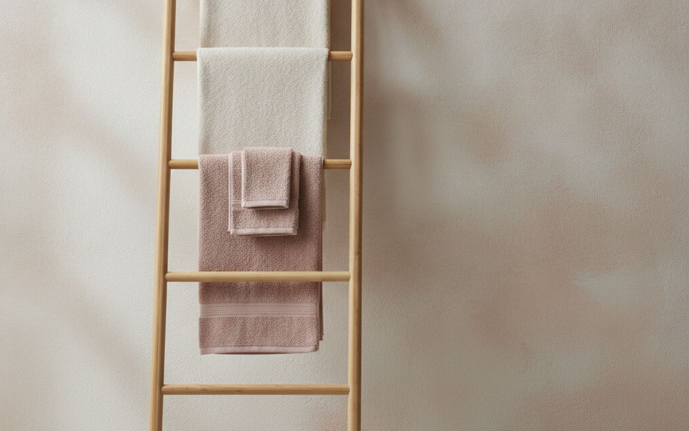

Praktische Badezimmer-Upgrades und Reparaturen für Mieter und Hausbesitzer, die auf Nutzen statt auf Trends setzen.
Badezimmer, besonders kleinere oder gemietete, stellen oft eine besondere Herausforderung dar: Sie funktional und angenehm zu gestalten, ohne dauerhafte Änderungen vorzunehmen. Es ist leicht, Gegenstände anzuhäufen, die versprechen, alle Probleme zu lösen, aber am Ende nur zur Unordnung beitragen. Das Ziel sollte sein, zweckmäßige Stücke einzuführen, die Ihren Alltag wirklich verbessern oder spezifische Probleme wie begrenzten Stauraum oder eine veraltete Dusche beheben. Vermeiden Sie Impulskäufe, die nur geringfügige ästhetische Anpassungen ohne greifbare Vorteile bieten.
Viele Produkte in der Kategorie Badezimmer werben mit Komfort als Hauptverkaufsargument, was irreführend sein kann. Eine schnelle Lösung mag verlockend erscheinen, aber wenn sie leicht kaputt geht, das Problem nicht wirklich löst oder den Raum weniger nutzbar macht, ist sie Geldverschwendung. Konzentrieren Sie sich auf Lösungen, die robust, anpassungsfähig sind und eine klare Verbesserung Ihres Raumes oder Ihrer Routine bieten. Priorisieren Sie Artikel, die leicht entfernt oder umfunktioniert werden können, insbesondere in Mietobjekten.
Hinweis. Die Links auf dieser Seite sind Affiliate-Links. Wenn Sie darüber kaufen, erhalten wir unter Umständen eine Provision ohne Mehrkosten für Sie. Das beeinflusst weder die Auswahl noch die Reihenfolge dieser Liste.
Wie wir ausgewählt haben
Wir haben diese Badezimmerartikel aufgrund ihres berichteten Nutzens, ihrer einfachen Installation und ihres Preis-Leistungs-Verhältnisses basierend auf verschiedenen Nutzererfahrungen ausgewählt. Der Schwerpunkt liegt auf praktischen Lösungen für häufige Frustrationen im Badezimmer, von mangelndem Stauraum bis hin zu kleineren ästhetischen Problemen in Mietobjekten. Wir haben diese Produkte nicht selbst getestet. Unsere Empfehlungen basieren auf öffentlich zugänglichen Produktspezifikationen, Designprinzipien und weit verbreitetem Verbraucherfeedback bezüglich ihrer Wirksamkeit und möglicher Nachteile.
Auf einen Blick
Die Preise sind Näherungswerte zum Zeitpunkt der Erstellung und ändern sich häufig.
Die Empfehlungen

1
Stauraum für DuschutensilienSimplehuman Adjustable Shower Caddy
$30-50
Ein Duschregal mit Spannstange ist eine einfache Lösung, um Duschprodukte zu organisieren, ohne Wände anbohren zu müssen. Im Gegensatz zu hängenden Regalen, die über den Duschkopf gehängt werden, nutzen diese eine federbelastete Stange, die sich zwischen Boden und Decke oder zwischen zwei Wänden klemmt und so eine stabilere Basis bietet. Dieses Design bietet in der Regel mehrere Regale oder Körbe, die oft höhenverstellbar sind, sodass Sie die Anordnung für verschiedene Flaschengrößen anpassen können. Sie sind besonders nützlich in Mietobjekten, wo feste Installationen keine Option sind, oder in Duschen ohne eingebaute Regale. Die Materialien variieren; Edelstahl oder eloxiertes Aluminium sind üblich für Korrosionsbeständigkeit, aber billigere Modelle aus verchromtem Stahl können schneller rosten.
Warum es hier steht
- Kein Bohren oder permanente Installation erforderlich
- Verstellbare Regale für verschiedene Flaschengrößen
- Stabiler als Modelle, die über den Duschkopf gehängt werden
Gut zu wissen
- Kann in manchen Räumen schwierig sicher zu spannen sein
- Billigere Modelle rosten mit der Zeit leicht

2
Einfache HandtuchaufhängungInterDesign York Lyra Over-the-Door Towel Rack
$20-40
Ein Handtuchhalter für die Tür bietet sofort zusätzlichen Platz zum Aufhängen von Handtüchern, ohne Werkzeug oder Installation. Er wird einfach über den oberen Rand Ihrer Badezimmertür gehängt und nutzt vertikalen Raum, der oft ungenutzt bleibt. Die meisten Modelle verfügen über zwei oder drei Stangen, die es Handtüchern ermöglichen, besser zu trocknen, als wenn sie auf einem einzigen Haken zusammengeknüllt wären. Dies ist eine praktische Lösung für kleine Badezimmer oder Mietobjekte, in denen wandmontierte Handtuchhalter nicht möglich sind. Achten Sie auf Modelle mit gepolsterten Haken, oft aus Schaumstoff oder Silikon, um die Oberfläche der Tür zu schützen und einen festen Sitz zu gewährleisten. Der Hauptnachteil ist, dass er Platz an der Tür beansprucht, was bei sehr engen Grundrissen oder wenn die Tür einen sehr schmalen Spalt zum Rahmen hat, unpraktisch sein kann.
Warum es hier steht
- Keine Installation, sofort zusätzlicher Platz für Handtücher
- Nutzt den oft ungenutzten vertikalen Platz an der Tür
- Leicht zu entfernen und neu zu positionieren
Gut zu wissen
- Die Tür schließt möglicherweise nicht perfekt oder leise, wenn er angebracht ist
- Kann mit vorhandener Türdekoration oder anderen über-der-Tür-Gegenständen kollidieren

3
Vielseitige temporäre Aufhängelösungen3M Command Bath Hooks (Water Resistant)
$8-15
Wasserfeste Command-Haken bieten eine einfache Möglichkeit, temporäre Aufhängepunkte im Badezimmer hinzuzufügen, ohne Oberflächen zu beschädigen. Diese Haken verwenden spezielle Klebestreifen, die so konzipiert sind, dass sie unter feuchten Bedingungen fest halten und sich sauber lösen lassen, vorausgesetzt, die Anweisungen werden genau befolgt. Sie eignen sich zum Aufhängen von Luffas, Waschlappen, kleinen Handtüchern oder sogar leichten Duschabziehern. Das macht sie ideal für Mieter, die Bohren vermeiden müssen, oder für alle, die eine flexible Organisation wünschen. Obwohl sie Wasserbeständigkeit beanspruchen, können übermäßige direkte Wassereinwirkung oder Lasten, die ihre angegebene Gewichtsgrenze überschreiten, ihre Haftung beeinträchtigen. Sie sind nicht für schwere Gegenstände gedacht, die herunterfallen könnten, und eine ordnungsgemäße Oberflächenvorbereitung ist für die Haftung entscheidend.
Warum es hier steht
- Beschädigungsfreie Entfernung, gut für Mieter
- Hält in feuchten Badezimmerumgebungen
- Vielseitig für leichte Gegenstände
Gut zu wissen
- Strikte Gewichtslimits müssen eingehalten werden
- Kann Haftung verlieren, wenn nicht richtig angebracht oder ständig direktem Sprühwasser ausgesetzt

4
Handbrause für MieterVOFONO Adjustable Adhesive Shower Head Holder
$10-20
Ein Klebe-Duschkopfhalter ermöglicht die Anbringung einer Handbrause ohne Bohren, was ihn für Mieter oder Personen, die ihre Duschwände nicht verändern möchten, geeignet macht. Diese Halterungen verfügen typischerweise über eine starke Kleberückseite, die für die Haftung auf glatten, sauberen Fliesen oder Glasfaseroberflächen ausgelegt ist. Die Halterung selbst ist oft verstellbar, sodass Sie den Duschstrahl nach Bedarf ausrichten können. Dies kann eine erhebliche Erleichterung beim Baden von Kindern, Haustieren oder einfach zum Abspülen der Duschkabine selbst sein. Der Erfolg des Klebers hängt jedoch vollständig von der richtigen Oberflächenvorbereitung und der Qualität des Klebers ab. Er haftet möglicherweise nicht gut auf strukturierten Fliesen, gestrichenem Trockenbau oder altem, porösem Fugenmörtel. Stellen Sie sicher, dass die Oberfläche vor dem Anbringen vollständig trocken und sauber ist.
Warum es hier steht
- Ermöglicht die Verwendung einer Handbrause ohne Bohren
- Verstellbarer Winkel für verschiedene Strahlrichtungen
- Einfache Installation auf glatten Oberflächen
Gut zu wissen
- Haftungszuverlässigkeit variiert stark je nach Oberfläche und Vorbereitung
- Nicht geeignet für schwere oder übergroße Duschköpfe

5
Schnelleres, sanfteres HaaretrocknenAquis Original Waffle Hair Towel
$20-30
Mikrofaser-Haartücher sind so konzipiert, dass sie das Haar schneller und sanfter trocknen als herkömmliche Baumwollhandtücher. Die feinen, synthetischen Fasern sind hochabsorbierend und entziehen dem Haar effizient Wasser, was die Trocknungszeit verkürzen und Frizz reduzieren kann. Viele Modelle verfügen über einen Knopf- und Schlaufenverschluss, mit dem Sie das Handtuch bequem auf dem Kopf befestigen können, während es wirkt. Dieses Design hält das Handtuch an Ort und Stelle und gibt Ihnen die Hände für andere Aufgaben frei. Während die Behauptungen über eine signifikant reduzierte Haarschädigung üblich sind, ist der Hauptvorteil ein schnelleres, weniger abrasives Trocknen im Vergleich zum kräftigen Reiben mit einem schweren Baumwollhandtuch. Sie sind im Allgemeinen leicht und kompakt, was die Lagerung erleichtert und die Gefahr des Dehnens feiner Haarsträhnen reduziert.
Warum es hier steht
- Absorbiert Wasser schnell und reduziert die Trocknungszeit
- Leichter und weniger sperrig als herkömmliche Handtücher
- Kann im Vergleich zum rauen Trocknen die Reibung auf dem Haar reduzieren
Gut zu wissen
- Manche empfinden die Textur als ungewöhnlich oder weniger luxuriös als Baumwolle
- Eliminiert für viele Haartypen nicht vollständig die Notwendigkeit von Hitze-Styling

6
Klare Sicht unter der DuscheToiletTree Products Deluxe Fogless Shower Mirror
$25-45
Ein beschlagfreier Duschspiegel ermöglicht klare Sicht beim Rasieren oder bei Hautpflege-Routinen unter der Dusche. Die meisten funktionieren entweder, indem sie mit warmem Duschwasser gefüllt werden, um die Temperatur auszugleichen, oder indem sie eine spezielle Beschichtung haben, die Kondensation widersteht. Modelle, die warmes Wasser verwenden, müssen oft für jeden Gebrauch nachgefüllt werden, was ein zusätzlicher Schritt sein kann, aber sie bleiben zuverlässig beschlagfrei. Andere verlassen sich für die Installation auf Saugnäpfe oder Klebehalterungen, was bedeutet, dass kein Bohren erforderlich ist. Dies ist ein praktischer Gegenstand für diejenigen, die sich gerne im Dampf rasieren, da das warme Wasser hilft, Stoppeln aufzuweichen. Der "beschlagfreie" Aspekt ist nicht immer dauerhaft; einige Beschichtungen verschlechtern sich mit der Zeit, und wassergefüllte Spiegel müssen regelmäßig entleert und nachgefüllt werden, um Stagnation zu verhindern.
Warum es hier steht
- Bietet eine klare Reflexion in einer dampfigen Umgebung
- Kein Bohren für die Installation erforderlich
- Nützlich zum Rasieren oder für die Hautpflege unter der Dusche
Gut zu wissen
- Manche Modelle müssen regelmäßig mit warmem Wasser nachgefüllt werden
- Die Wirksamkeit der beschlagfreien Beschichtung kann mit der Zeit nachlassen

7
Maximieren Sie den SchrankplatzSimpleHouseware Under Sink 2 Tier Expandable Shelf Organizer Rack
$25-40
Ein Aufbewahrungsorganizer unter der Spüle hilft, den oft chaotischen Raum unter dem Badezimmerwaschbecken zu bändigen, besonders in Mietobjekten, wo eingebaute Lösungen selten sind. Diese Organizer verfügen typischerweise über verstellbare Regale oder Schubladen, die um Rohre und Sanitäranlagen herum konfiguriert werden können, um den vertikalen und horizontalen Raum zu maximieren. Sie sind in der Regel freistehend und erfordern keine Installation, wodurch sie leicht zu entfernen oder neu zu konfigurieren sind. Dies ermöglicht eine geordnetere Aufbewahrung von Reinigungsmitteln, zusätzlichen Toilettenartikeln oder Haushaltsgeräten und verhindert, dass Gegenstände im hinteren Teil des Schranks verloren gehen. Die meisten sind aus Kunststoff oder beschichtetem Metall gefertigt und bieten eine angemessene Haltbarkeit. Die wichtigste Überlegung ist sicherzustellen, dass sie in Ihre spezifische Spülenkonfiguration passen, da die Sanitärkonfigurationen erheblich variieren; messen Sie sorgfältig vor dem Kauf.
Warum es hier steht
- Maximiert den vertikalen Stauraum um Rohre herum
- Keine Installation erforderlich, freistehendes Design
- Hält Gegenstände organisiert und zugänglich
Gut zu wissen
- Passt möglicherweise nicht perfekt in alle Unterspülkonfigurationen
- Oft aus leichteren Materialien gefertigt, die weniger robust wirken können

8
Schnelle FugenauffrischungGrout Pen White Tile Grout Restorer Pen
$10-18
Ein Fugenstift bietet eine kosmetische Lösung für verfärbte oder fleckige Fugen, ohne dass aufwendiges Neuverfugen erforderlich ist. Diese Stifte enthalten eine farbähnliche Formel, die dazu bestimmt ist, bestehende Fugen zu überdecken und sie heller und sauberer erscheinen zu lassen. Sie sind besonders nützlich für schnelle Ausbesserungen in Mietbädern, wo die Fugen alt, aber nicht strukturell beeinträchtigt sind, oder um das Aussehen von schimmelbefleckten Fugen nach der Reinigung vorübergehend zu verbessern. Die Anwendung ist einfach, ähnlich wie bei einem Marker, erfordert aber eine ruhige Hand. Dies ist jedoch eine oberflächliche Lösung. Sie behebt keine zugrunde liegenden Schimmelprobleme, und die Farbe kann in stark frequentierten oder stark geschrubbten Bereichen abnutzen. Es ist eine vorübergehende ästhetische Verbesserung, keine dauerhafte Reparatur struktureller Schwächen.
Warum es hier steht
- Schnelle und einfache Möglichkeit, verfärbte Fugen aufzufrischen
- Günstige vorübergehende ästhetische Verbesserung
- Keine speziellen Werkzeuge oder Fähigkeiten erforderlich
Gut zu wissen
- Keine dauerhafte Lösung, kann sich abnutzen
- Behandelt keine zugrunde liegenden Schimmel- oder Moderprobleme
- Farbabgleich kann bei nicht-weißen Fugen schwierig sein

9
Behebt Probleme mit der WasserqualitätAquaBliss HD Multi-Stage Shower Filter
$30-50
Ein Inline-Duschfilter wird direkt an Ihren vorhandenen Duscharm angeschlossen, zwischen Arm und Duschkopf, um bestimmte Probleme mit der Wasserqualität zu beheben. Diese Filter verwenden typischerweise verschiedene Medien wie Aktivkohle oder KDF, um Chlor, Schwermetalle und einige Verunreinigungen aus dem Wasser zu reduzieren. Während Hersteller oft Vorteile für Haut und Haar behaupten, ist die primäre, besser belegte Wirkung die Reduzierung von Chlor, das austrocknend wirken kann. Die Installation ist in der Regel einfach und erfordert Handfestigkeit oder grundlegende Werkzeuge. Es ist eine nicht-permanente Lösung, die für Mieter geeignet ist. Diese Filter erfordern jedoch einen regelmäßigen Austausch der Kartuschen, typischerweise alle 4-6 Monate, und ihre Wirksamkeit gegen alle Verunreinigungen variiert. Sie sind kein Ersatz für eine zentrale Wasserfilteranlage und werden hartes Wasser nicht wesentlich enthärten.
Warum es hier steht
- Reduziert Chlor und einige Verunreinigungen im Duschwasser
- Einfach zu installieren und zu entfernen, gut für Mieter
- Kann helfen, die austrocknende Wirkung von chloriertem Wasser zu mildern
Gut zu wissen
- Erfordert regelmäßigen Austausch der Filterkartusche, was zusätzliche Kosten verursacht
- Die Wirksamkeit gegen alle Verunreinigungen ist begrenzt
- Kann den Wasserdruck leicht reduzieren

10
Stilvoller Handtuchständer ohne BohrenSONGMICS Bamboo Freestanding Towel Rack
$40-70
Ein freistehender Handtuchständer, oft im Leiterdesign, bietet eine substanziellere Lösung zur Handtuchaufbewahrung ohne jegliche Installation. Diese Einheiten lehnen einfach an einer Wand oder stehen von selbst und bieten mehrere Sprossen oder Stangen zum Aufhängen von Handtüchern zum Trocknen. Sie können ein dekoratives Element in einem Badezimmer hinzufügen und gleichzeitig einen praktischen Zweck erfüllen, insbesondere in größeren Räumen oder wenn eine Wandmontage nicht möglich ist. Die Materialien reichen von Metall bis zu Bambus, was sowohl Ästhetik als auch Haltbarkeit beeinflusst. Der Hauptnachteil ist der Platz, den sie auf dem Boden einnehmen. Obwohl vielseitig, stellen Sie sicher, dass das Design stabil ist und nicht leicht umkippt, besonders wenn Sie Kinder oder Haustiere haben; einige Modelle enthalten Wandanker für zusätzliche Sicherheit, obwohl diese Bohren erfordern.
Warum es hier steht
- Bietet erheblichen Platz zum Aufhängen von Handtüchern ohne Bohren
- Kann ein dekoratives Element im Badezimmer sein
- Leicht zu bewegen und neu zu positionieren
Gut zu wissen
- Nimmt Bodenfläche ein, weniger ideal für sehr kleine Badezimmer
- Stabilität kann ein Problem sein, wenn nicht richtig beschwert oder abgestützt
- Handtücher trocknen möglicherweise nicht so schnell, wenn sie zu eng zusammengepackt sind
Häufige Fragen
Sind teure Handtücher den Preis wirklich wert, oder ist das nur Marketing?
Für die meisten Menschen sind sehr teure Handtücher keine notwendige Verbesserung. Während hochwertige Handtücher Baumwollfasern mit langen Fasern oder einzigartige Webarten aufweisen können, die sich anfangs weicher anfühlen, verringert sich dieser Unterschied nach einigen Wäschen oft erheblich. Ihre Hauptaufgabe ist es, Wasser aufzunehmen, und viele mittelpreisige Baumwoll- oder sogar Mikrofaserhandtücher erledigen dies effektiv. Wenn Sie Haltbarkeit und grundlegende Saugfähigkeit bevorzugen, ist ein preisgünstiges Set gut geeignet. Anstatt dem weichsten Gefühl nachzujagen, suchen Sie nach Handtüchern mit einem guten Gleichgewicht zwischen Saugfähigkeit und angemessener Trocknungszeit, die normalerweise zu einem niedrigeren Preis erhältlich sind. Geben Sie hier nicht zu viel aus.
Kann ich in einem Mietbad wirklich einen neuen Duschkopf installieren, ohne Probleme zu verursachen?
Ja, in den meisten Fällen ist der Austausch eines Duschkopfes in einer Mietwohnung ein einfaches, umkehrbares Upgrade. Duschköpfe lassen sich normalerweise mit einem Schraubenschlüssel oder sogar von Hand vom Duscharm abschrauben. Sie schrauben einfach den alten ab, wickeln etwas Klempnerband um das Gewinde des Duscharms (normalerweise im Lieferumfang neuer Duschköpfe enthalten) und schrauben den neuen an. Bewahren Sie den Original-Duschkopf an einem sicheren Ort auf, damit Sie ihn vor dem Auszug wieder anbringen können. Diese Modifikation hinterlässt keine permanenten Spuren oder Veränderungen, was sie zu einem vermieterfreundlichen Update macht, das Ihr Duscherlebnis erheblich verbessern kann.
Was ist der beste Weg, um mit Schimmel und Schmutz in einem Mietbad umzugehen, das nicht makellos sauber ist?
Beginnen Sie mit regelmäßiger Reinigung mit geeigneten Badreinigern. Gegen Schimmel können Produkte mit Bleichmittel oder Wasserstoffperoxid wirksam sein, aber testen Sie sie immer zuerst an einer unauffälligen Stelle und sorgen Sie für gute Belüftung. Gegen allgemeinen Schmutz reichen oft ein Allzweck-Badreiniger und eine steife Bürste aus. Wenn die Fugen verfärbt, aber strukturell intakt sind, kann ein Fugenstift eine kosmetische Auffrischung bieten. Denken Sie daran, das Badezimmer nach dem Duschen zu lüften, um neues Schimmelwachstum zu verhindern. Auch wenn Sie nicht renovieren können, können gründliche Reinigung und strategische kosmetische Korrekturen den Raum erheblich verbessern.
Wie kann ich in einem kleinen Badezimmer mehr Stauraum schaffen, ohne zu bohren oder dauerhafte Änderungen vorzunehmen?
Konzentrieren Sie sich auf vertikale und über-Armaturen-Lösungen. Ein Handtuchhalter für die Tür oder ein Duschregal mit Spannstange können erheblichen Stauraum ohne Werkzeug schaffen. Organizer unter der Spüle eignen sich hervorragend zur Maximierung des Schrankraums um Sanitäranlagen herum. Für kleinere Gegenstände können Sie Saugnapf-Organizer für die Dusche oder Klebehaken auf glatten Wandflächen in Betracht ziehen. Freistehende Regale oder schmale Rollwagen passen in ungenutzte Ecken. Der Schlüssel ist, nach Gegenständen zu suchen, die selbsttragend sind oder temporäre, beschädigungsfreie Klebstoffe verwenden, was eine einfache Entfernung beim Umzug oder bei der Neukonfiguration des Raumes ermöglicht.
← Alle Ratgeber
Wir haben uns für das Amazon-Partnerprogramm beworben. Wir sind noch kein Amazon-Partner und verdienen derzeit nichts an Amazon-Links. Als AliExpress-Affiliate verdienen wir an qualifizierten Käufen. Preise und Verfügbarkeit entsprechen dem Stand der Veröffentlichung und können sich ändern.